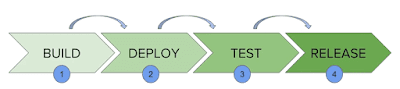
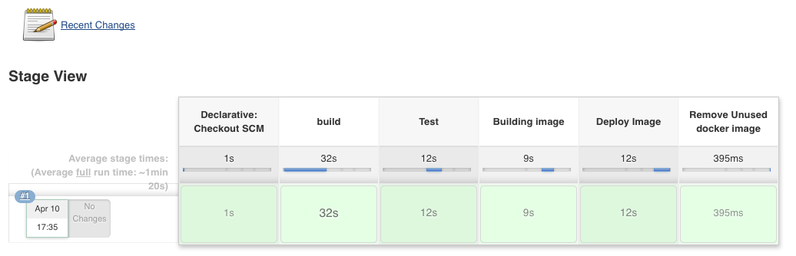
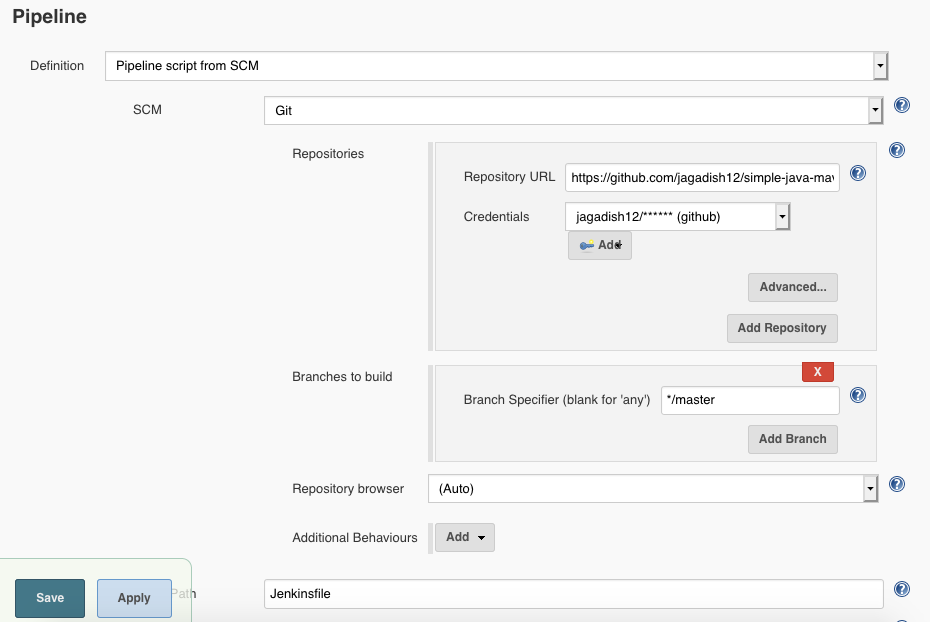
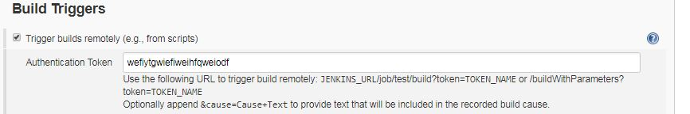

使用 Docker 全自动构建 Java 应用


这次的流水线中，我们使用 Docker 容器来构建我们的 Java 应用。
我们会在 Docker 容器里运行 Jenkins，再使用 Jenkins 启动一个 Maven 容器，用来编译我们的代码，接着在另一个 Maven 容器中运行测试用例并生成制品（例如 jar 包），然后再在 Jenkins 容器中制作 Docker 镜像，最后将镜像推送到 Docker Hub。

我们会用到两个 Github 仓库。
- Jenkins-complete：这是主仓库，包含了启动 Jenkins 容器所需的配置文件。
- Simple-java-maven-app：使用 Maven 创建的 简单的 Java 应用。
在搭建之前，我们先来了解一下这两个仓库。
了解 Jenkins-complete
这是我们构建 Jenkins 镜像的核心仓库，它包含了所需的配置文件。我们通过 Jenkins 官方提供的 Docker 镜像启动 Jenkins 容器，然后完成一些动作，例如安装插件、创建用户等。
安装好之后，我们会创建用来获取 Java 应用的 Github 凭据，还有推送镜像到 Dockerhub 的 Docker 凭据。最后，开始创建我们应用的流水线 job。
这个过程很长，我们的目标是让所有这些事都自动化。主仓库包含的文件和详细配置会用来创建镜像。当创建好的镜像启动运行以后，我们就有了： 1. 新创建的 admin/admin 用户 2. 已经装好的一些插件 3. Docker 和 Github 凭据 4. 新创建的名为 sample-maven-job 的流水线。
如果把源码列成树状，就看到下面的结构：
jagadishmanchala@Jagadish-Local:/Volumes/Work$ tree jenkins-complete/
jenkins-complete/
├── Dockerfile
├── README.md
├── credentials.xml
├── default-user.groovy
├── executors.groovy
├── install-plugins.sh
├── sample-maven-job_config.xml
├── create-credential.groovy
└── trigger-job.sh
我们来看看它们都是干嘛的：
default-user.groovy - 这个文件用来创建默认用户 admin/admin。
executors.groovy - 这个 Groovy 脚本设置 Jenkins 的执行器数量为 5。一个 Jenkins 执行器相当于一个处理进程，Jenkins job 就是通过它运行在对应的 slave/agent 机器上。
create-credential.groovy - 用来创建 Jenkins 全局凭据的 Groovy 脚本。这个文件可以创建任意的 Jenkins 全局凭据，包括 Docker hub 凭据。我们要修改文件里 Docker hub 的用户名密码，改成我们自己的。这个文件会被复制到镜像里，然后在 Jenkins 启动时运行。
credentials.xml - XML 凭据文件。这个文件包含了 Github 和 Docker 凭据。它看起来是这样的：
<com.cloudbees.plugins.credentials.impl.UsernamePasswordCredentialsImpl>
<scope>GLOBAL</scope>
<id>github</id>
<description>github</description>
<username>jagadish***</username>
<password>{AQAAABAAAAAQoj3DDFSH1******</password>
</com.cloudbees.plugins.credentials.impl.UsernamePasswordCredentialsImpl>
仔细观察上面的代码，我们可以看到一个 id 为 “github” 的用户名以及加密后的密码。这个 id 很重要，我们会在后面的流水线中用到。
怎样拿到加密后的密码呢？
想要拿到密码加密后的内容，你需要到这里去 Jenkins server -> Manage Jenkins -> Script console，然后在输入框里输入下面的代码
import hudson.util.Secret
def secret = Secret.fromString("password")
println(secret.getEncryptedValue())
将 “password” 换成你自己的密码，点击运行，你就得到了加密后的内容。再把这个内容粘贴到 credentials.xml 文件里面就可以了。
DockerHub 的密码加密过程同上。
- sample-maven-job_config.xml - 这个 XML 文件包含了流水线 job 的细节内容。Jenkins 会在
Jenkins console里创建一个名为“sample-maven-job”的 job，这个文件包含了它的详细配置。
这个配置很简单，Jenkins 读取文件后，会先创建一个名为 “sample-maven-job” 的流水线 job，然后把仓库指向 Github。 一并设置的还有名为 “github” 的凭据 id。 看起来像是这个样子：

配置好仓库地址以后，用来远程触发 job 的 token 也就生成了。为了设置远程触发，我们需要打开 “Trigger builds remotely” 选项， 然后把上面的 token 设置到这里。这些配置可以在流水线配置页面的 “Build Triggers” 那一节中看到。为了在后面的 shell 脚本中用这个 token 触发 job， 我们把这个 token 命名为 “MY-TOKEN”。

- trigger-job.sh - 这是一个简单的 shell 脚本，其中的 curl 命令用来触发 job。
虽然，我们在容器里创建了 Jenkins 服务和一个 job，我们还需要一个触发器来触发整个自动构建。我喜欢下面的方法:
- 启动 Jenkins Docker 容器时，完成所有需要做的事，例如创建 job、凭据、用户等。
- 当容器启动好后触发 job。
我写的这个简单 shell 脚本就是用来在容器启动好以后触发 job 的。shell 脚本用 curl 向 Jenkins 发送了一个 post 请求命令。内容像这样。
Install-plugins.sh - 这是我们用来安装所有所需插件的脚本。我们会把这个脚本复制到 Jenkins 镜像，并把插件名作为它的参数。 容器启动好以后，这个脚本就会根据插件名对应的插件。
Dockerfile - 这是自动化过程中最重要的文件。我们会用这个 Docker 文件来创建完整的 Jenkins 服务和所有配置。理解这个文件对于编写你自己的自动化构建是很重要的。
FROM jenkins/jenkins:lts
ARG HOST_DOCKER_GROUP_ID
# 使用内置的 install-plugins.sh 脚本安装我们所需的插件
RUN install-plugins.sh pipeline-graph-analysis:1.9 \
cloudbees-folder:6.7 \
docker-commons:1.14 \
jdk-tool:1.2 \
script-security:1.56 \
pipeline-rest-api:2.10 \
command-launcher:1.3 \
docker-workflow:1.18 \
docker-plugin:1.1.6
# 设置 admin 用户的环境变量
ENV JENKINS_USER admin
ENV JENKINS_PASS admin
# 跳过初始设置向导
ENV JAVA_OPTS -Djenkins.install.runSetupWizard=false
# 启动脚本，设置执行器的数量、创建 admin 用户
COPY executors.groovy /usr/share/jenkins/ref/init.groovy.d/
COPY default-user.groovy /usr/share/jenkins/ref/init.groovy.d/
COPY create-credential.groovy /usr/share/jenkins/ref/init.groovy.d/
# 命名 job
ARG job_name_1="sample-maven-job"
RUN mkdir -p "$JENKINS_HOME"/jobs/${job_name_1}/latest/
RUN mkdir -p "$JENKINS_HOME"/jobs/${job_name_1}/builds/1/
COPY ${job_name_1}_config.xml /usr/share/jenkins/ref/jobs/${job_name_1}/config.xml
COPY credentials.xml /usr/share/jenkins/ref/
COPY trigger-job.sh /usr/share/jenkins/ref/
# 添加自定义配置到容器里
#COPY ${job_name_1}_config.xml "$JENKINS_HOME"/jobs/${job_name_1}/config.xml
USER root
#RUN chown -R jenkins:jenkins "$JENKINS_HOME"/
RUN chmod -R 777 /usr/share/jenkins/ref/trigger-job.sh
# 用给定的用户组 ID 创建 'Docker' 用户组
# 将 'jenkins' 用户加到 'Docker' 用户组
RUN groupadd docker -g ${HOST_DOCKER_GROUP_ID} && \
usermod -a -G docker jenkins
RUN apt-get update && apt-get install -y tree nano curl sudo
RUN curl https://get.docker.com/builds/Linux/x86_64/docker-latest.tgz | tar xvz -C /tmp/ && mv /tmp/docker/docker /usr/bin/docker
RUN curl -L "https://github.com/docker/compose/releases/download/1.23.1/docker-compose-$(uname -s)-$(uname -m)" -o /usr/local/bin/docker-compose
RUN chmod 755 /usr/local/bin/docker-compose
RUN usermod -a -G sudo jenkins
RUN echo "jenkins ALL=(ALL:ALL) NOPASSWD:ALL" >> /etc/sudoers
RUN newgrp docker
USER jenkins
#ENTRYPOINT ["/bin/sh -c /var/jenkins_home/trigger-job.sh"]
- FROM jenkins/jenkins:lts - 我们将使用 Jenkins 官方提供的镜像。
- ARG HOST_DOCKER_GROUP_ID - 需要记住的重点出现了，虽然我们在 Jenkins 容器里创建了 Docker 容器，但我们没有在 Jenkins 自身内部创建容器。 相反，我们是在它们自己的宿主机上创建了容器。确切的说，是我们让安装在 Jenkins 容器里的 Docker tool 部署一个 Maven 容器到宿主机上。为了实现这个部署，我们需要 Jenkins 容器和宿主机设置一样的用户组。
为了允许 Jenkins 这样的未授权用户访问，我们要把 Jenkins 用户加到 Docker 用户组里去。要做到这件事，我们只需要保证容器里的 Docker
用户组与宿主机上的 Docker 有一致的 GID 即可。用户组 id 可以通过命令 getent group Docker 获得。
HOST_DOCKER_GROUP_ID 被设为了构建参数，我们要在构建时将宿主机的 Docker 用户组 id 做为参数传进来参与构建。
# 使用内置的 install-plugins.sh 脚本安装我们所需的插件
RUN install-plugins.sh pipeline-graph-analysis:1.9 \
cloudbees-folder:6.7 \
docker-commons:1.14 \
接下来是 install-plugins.sh 脚本，把要安装的插件作为参数传给脚本。这个脚本是默认提供的，也可以从宿主机复制一份。
给 Jenkins Admin 用户设置环境变量
ENV JENKINS_USER admin
ENV JENKINS_PASS admin
我们设置了 JENKINS_USER 和 JENKINS_PASS 两个环境变量，default-user.groovy 脚本会用它们创建帐号 admin 用户（密码 admin）。
# 跳过初始设置向导
ENV JAVA_OPTS -Djenkins.install.runSetupWizard=false
这个使得 Jenkins 以静默模式安装
# 设置启动器数量和创建 admin 用户的启动脚本
COPY executors.groovy /usr/share/jenkins/ref/init.groovy.d/
COPY default-user.groovy /usr/share/jenkins/ref/init.groovy.d/
COPY create-credential.groovy /usr/share/jenkins/ref/init.groovy.d/
像我们讨论的那样，上面的脚本会设置执行器各数为 5，创建默认用户 admin/admin。
需要注意的是，如果去看 Jenkins 官方的 Docker 镜像，你会看到有一个 VOLUME 指向了 /vars/jenkins_home 目录。这个意思是设置 Jenkins
的家目录，类似于物理机上使用包管理器安装 Jenkins 时的目录 /var/lib/jenkins。
但是，当 volume 挂载好以后，就只有 root 用户有权限在那里编辑或者添加文件。为了让未授权的 jenkins 用户复制内容到 volume，
将所有东西复制到 /usr/share/Jenkins/ref/。 这样当容器启动后，Jenkins 会自动使用 Jenkins 用户把这个位置的文
件拷贝一份到 /vars/jenkins_home 中。
同样，复制到 /usr/share/jenkins/ref/init.groovy.d/ 的脚本会在 Jenkins 启动后被执行。
# 命名 job
ARG job_name_1="sample-maven-job"
RUN mkdir -p "$JENKINS_HOME"/jobs/${job_name_1}/latest/
RUN mkdir -p "$JENKINS_HOME"/jobs/${job_name_1}/builds/1/
COPY ${job_name_1}_config.xml /usr/share/jenkins/ref/jobs/${job_name_1}/config.xml
COPY credentials.xml /usr/share/jenkins/ref/
COPY trigger-job.sh /usr/share/jenkins/ref/
在上面的例子中，我把我的 job 名字设置为 “sample-maven-job”，然后创建目录，复制一些文件。
RUN mkdir -p "$JENKINS_HOME"/jobs/${job_name_1}/latest/
RUN mkdir -p "$JENKINS_HOME"/jobs/${job_name_1}/builds/1/
这些说明很重要，它们在 Jenkins 家目录创建了一些用来存放配置文件的文件夹。latest/ 和 builds/1 存放的目录也需要与其 job 相对应。
这些创建好以后，我们把已经复制到 /var/share/jenkins/ref 的文件 “sample-maven-job_config.xml”，再让 Jenkins 复制
到 /var/jenkins_home/jobs/，这样就有了 sample-maven-job。
最后，我们同样把 credentials.xml 和 trigger-job.sh 文件复制到 /usr/share/jenkins/ref。 当容器启动以后，
所有这个目录下的文件都会以 Jenkins 用户的权限移动到 /var/jenkins_home。
USER root
#RUN chown -R jenkins:jenkins "$JENKINS_HOME"/
RUN chmod -R 777 /usr/share/jenkins/ref/trigger-job.sh
# 用指定的用户组组 ID 创建 'docker' 用户组
# 并将 'jenkins' 用户添加到该组
RUN groupadd docker -g ${HOST_DOCKER_GROUP_ID} && \
usermod -a -G docker jenkins
RUN apt-get update && apt-get install -y tree nano curl sudo
RUN curl https://get.docker.com/builds/Linux/x86_64/docker-latest.tgz | tar xvz -C /tmp/ && mv /tmp/docker/docker /usr/bin/docker
RUN curl -L "https://github.com/docker/compose/releases/download/1.23.1/docker-compose-$(uname -s)-$(uname -m)" -o /usr/local/bin/docker-compose
RUN chmod 755 /usr/local/bin/docker-compose
RUN usermod -a -G sudo jenkins
RUN echo "jenkins ALL=(ALL:ALL) NOPASSWD:ALL" >> /etc/sudoers
RUN newgrp docker
USER jenkins
下面的指令以 root 用户执行。在 root 用户的指令下，我们使用宿主机上的 Docker group ID 在容器里创建新的 Docker 用户组。然后把 Jenkins 用户加到 Docker 组当中。
通过这些，我们就可以使用 Jenkins 用户创建容器了。这样就能突破只有 root 用户能创建容器的限制。为了让 Jenkins 用户能创建容器，我们需要把 Jenkins 用户添加到 Docker 用户组当中去。
在下面的指令里，我们安装了 docker-ce 和 docker-compose 工具。我们设置了 Docker-compose 的权限。最后，我们把 Jenkins 用户加到 sudoers 文件里，以给到 root 用户特定的权限。
RUN newgrp docker
这个指令非常重要。通常我们修改一个用户的用户组，都需要重新登录以使新的设置生效。为了略过这一步，我们使用 Docker 命令 newgrp 使设置直接生效。最后，我们回到 Jenkins 用户。
构建镜像
理解了 Docker 文件后，我们就要用它构建我们的镜像：
docker build --build-arg HOST_DOCKER_GROUP_ID="`getent group docker | cut -d':' -f3`" -t jenkins1 .
在 Dockerfile 的所在目录下运行上面的 Docker 构建指令。在上面的命令中，我们传了 Docker 用户组 ID 给 build-arg。 这个值会传给 HOST_DOCKER_GROUP_ID，用来在 Jenkins 容器里创建相同 ID 的用户组。下载以及安装 Jenkins 插件会增加构建镜像的时间。
运行镜像
镜像构建好以后，我们以下面的命令运行：
docker run -itd -v /var/run/docker.sock:/var/run/docker.sock -v $(which docker):/usr/bin/docker -p 8880:8080 -p 50000:50000 jenkins1
关于卷挂载有两件重要的事。第一是我们把 Docker 命令挂载到了容器里，当需要其它容器时，就可以在当前容器创建了。
另一个重要的是挂载 /var/run/Docker.sock。 Docker.sock 是 Docker 守护进程监听的一个 UNIX socket。 这是访问 Docker API 的主要入口点。它也可以是 TCP 类型的 socket，但是出于安全原因，默认设定是 UNIX 类型的。
Docker 默认通过这个 socket 执行命令。我们把它挂载到 Docker 容器里，是为了能在容器里启动新的其它容器。这个挂载也可以用于服务自省和日志目的。但这增加了被攻击的风险，使用的时候要小心。
上面的命令执行后，我们就得到一个运行着的 Jenkins 容器。可以通过 URL<ip address>:8880 查看 Jenkins 控制台。使用 “admin/admin” 登录 Jenkins。 我们就可以看到还没有运行过的、使用 SCM，Token 和凭据创建的 sample-maven-job。
运行 Job
要运行这个 job，我们只需要带着 containerID 以下面的方式执行 trigger-job.sh。
docker exec <Jenkins Container ID> /bin/sh -C /var/jenkins_home/trigger-job.sh
运行后我们就可以看到流水线的构建开始了。
了解 Simple Java Maven App
如上面所说，这个仓库是我们的 Java 应用。它使用 Maven 打包成品，还包含一个 Dockerfile，一个 Jenkinsfile 以及源代码。源代码结构与其它 Maven 项目类似。
- Jenkinsfile - 这是 sample-maven-job 启动前的核心文件。流水线 job 使用 Github 凭据从 Github 下载源代码。
Jenkinsfile 文件里最重要事的是定义 agent。 我们使用 “agent any” 选择任何可用的 agent 来构建代码。我们也可以为某个 stage 定义 agent 环境。
stage("build"){
agent {
docker {
image 'maven:3-alpine'
args '-v /root/.m2:/root/.m2'
}
steps {
sh 'mvn -B -DskipTests clean package'
stash includes: 'target/*.jar', name: 'targetfiles'
}
}
}
在上面的 stage 中，我们设置它的 agent 环境为 Docker 镜像 “maven:3-alpine.” 这样 Jenkins 就会触发 maven:3-alpine 容器，
然后执行定义在步骤里的命令 mvn -B -DskipTests clean package。
同样的，单元测试也是以这样的方式运行。docker 启动一个 Maven 镜像，然后执行 mvn test。
environment {
registry = "docker.io/<user name>/<image Name>"
registryCredential = 'dockerhub'
dockerImage = ''
}
另一件重要的事是定义环境。我定义了名为 docker.io/jagadesh1982/sample 的仓库，意味着使用最终制品（jar 包）所创建的镜像名称也将遵循这个格式
docker.io/jagadesh1982/sample:<version>。如果你的镜像需要推送到 Dockerhub 的话，记住这一点是非常重要的。Dockerhub 希望镜像名按照
docker.io/<user Name>/<Image Name> 这样的风格命名，以方便上传。
当构建结束后，新的镜像会被上传到 Dockerhub，本地的镜像则会被删除。
- Dockerfile - 这个仓库包含的 Dockerfile 用来创建 jar 包的镜像。它会拷贝我的
my-app-1.0-SNAPSHOT.jar到镜像中去。它的内容是这样：
FROM alpine:3.2
RUN apk --update add openjdk7-jre
CMD ["/usr/bin/java", "-version"]
COPY /target/my-app-1.0-SNAPSHOT.jar /
CMD /usr/bin/java -jar /my-app-1.0-SNAPSHOT.jar